The "Lightning formula" fields in the pattern map's field menu. Experimental.
For each 0.5° cell (about 35 miles across) over California and each fire day, the chance of at least one cloud-to-ground lightning strike, or of ten or more: the same cells and targets as the "Lightning potential" fields, so the two can be compared directly. It comes from ECMWF IFS ENS alone (50 members, 14 fire days), so it's the same map whichever model is picked. Past day 7 read it as a rough signal at most: thunderstorm forecasts that far out have little skill, and the formula's skill was only tested on the reanalysis, not on forecasts at any lead.
ECMWF's forecast model computes lightning itself, with a scheme by Philippe Lopez (2016) that ties flash rates to the storms its convection scheme builds. Those lightning fields aren't in ECMWF's free open data, the public charts are images only, and the ERA5 reanalysis on the Copernicus Climate Data Store doesn't carry them either. Since 20 October 2026 the open data does carry the ingredients the scheme rests on, so this layer rebuilds the scheme's shape from them.
Lopez's scheme: flash density = α · QR · √CAPE · min(zbase, 1.8 km)², where QR is a charging term (graupel colliding with cloud water and snow between the 0 °C and −25 °C levels) and zbase the convective cloud base. The open data has no graupel or cloud-base fields, so stand-ins are used:
Lopez's exponents (1, 1, ½, 2) were tuned for his graupel and cloud-base fields, not these stand-ins, so the exponents were refit: convective rain0.5 · cloud ice/water1 · CAPE1.5 · cloud base5. The plain Lopez shape is scored below too.
Both layers on the same cell-days, from the reanalysis (not from forecasts; see the limits below). AUC: 0.5 is no skill, 1 is perfect. Brier skill: improvement over the cell's usual frequency for the month.
| AUC | Brier skill | Brier score | |
|---|---|---|---|
| Lightning formula (fitted) | 0.925 | +23% | 0.0259 |
| Plain Lopez shape (scale fitted) | 0.908 | +19% | 0.0271 |
| Logistic layer (Nikolov et al. method) | 0.916 | +13% | 0.0290 |
| Cell-month climatology alone | 0.787 | 0% | 0.0334 |
| AUC | Brier skill | Brier score | |
|---|---|---|---|
| Lightning formula (fitted) | 0.941 | +17% | 0.0140 |
| Plain Lopez shape (scale fitted) | 0.920 | +14% | 0.0146 |
| Logistic layer (Nikolov et al. method) | 0.930 | +9% | 0.0154 |
| Cell-month climatology alone | 0.831 | 0% | 0.0169 |
Day by day across California (1825 test days): the rank correlation between the number of cells that had strikes and the sum of the cells' chances is 0.82 for the formula and 0.74 for the logistic layer; between total strikes and the formula's expected strikes, 0.81.
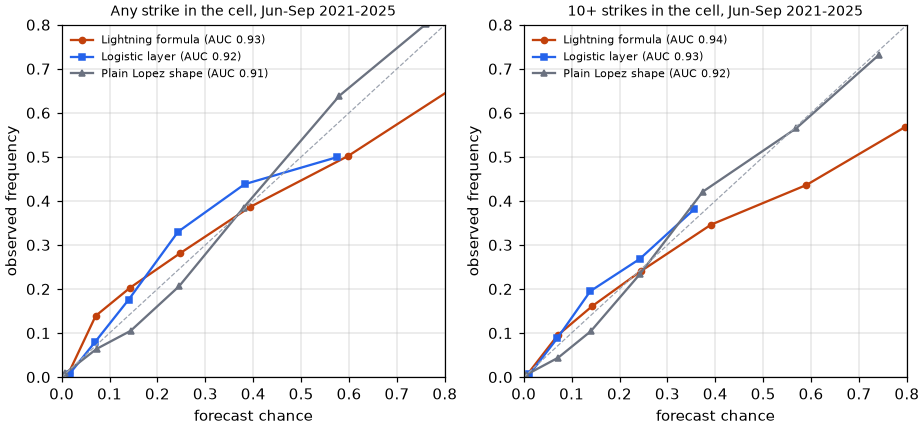
| Forecast | Mean forecast | Observed | Cell-days |
|---|---|---|---|
| 0.00-0.05 | 2% | 1% | 326,232 |
| 0.05-0.10 | 7% | 14% | 8,549 |
| 0.10-0.20 | 14% | 20% | 7,263 |
| 0.20-0.30 | 25% | 28% | 3,869 |
| 0.30-0.50 | 39% | 39% | 4,867 |
| 0.50-0.70 | 60% | 50% | 3,377 |
| 0.70-1.00 | 82% | 66% | 3,543 |
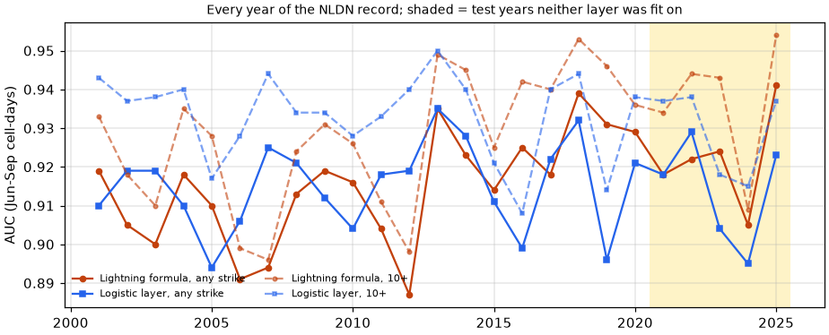
Years marked "fit" were used to fit both layers, so their scores are flattering; the test years are the fair comparison.
| Year | Strikes | Formula expected | Cell-days hit | AUC ≥1, formula | AUC ≥1, logistic | AUC ≥10, formula | AUC ≥10, logistic |
|---|---|---|---|---|---|---|---|
| 2001 (fit) | 128,184 | 124,178 | 2,386 | 0.919 | 0.910 | 0.933 | 0.943 |
| 2002 (fit) | 78,076 | 42,985 | 1,955 | 0.905 | 0.919 | 0.918 | 0.937 |
| 2003 (fit) | 243,380 | 134,846 | 3,088 | 0.900 | 0.919 | 0.910 | 0.938 |
| 2004 (fit) | 173,655 | 97,089 | 2,563 | 0.918 | 0.910 | 0.935 | 0.940 |
| 2005 (fit) | 388,613 | 166,978 | 3,669 | 0.910 | 0.894 | 0.928 | 0.917 |
| 2006 (fit) | 267,465 | 194,071 | 3,800 | 0.891 | 0.906 | 0.899 | 0.928 |
| 2007 (fit) | 97,313 | 60,995 | 1,797 | 0.894 | 0.925 | 0.896 | 0.944 |
| 2008 (fit) | 80,034 | 66,054 | 1,826 | 0.913 | 0.921 | 0.924 | 0.934 |
| 2009 (fit) | 112,393 | 145,824 | 2,377 | 0.919 | 0.912 | 0.931 | 0.934 |
| 2010 (fit) | 172,221 | 127,701 | 2,350 | 0.916 | 0.904 | 0.926 | 0.928 |
| 2011 (fit) | 204,927 | 126,099 | 2,343 | 0.904 | 0.918 | 0.911 | 0.933 |
| 2012 (fit) | 151,939 | 155,341 | 2,214 | 0.887 | 0.919 | 0.898 | 0.940 |
| 2013 (fit) | 215,685 | 430,926 | 2,487 | 0.935 | 0.935 | 0.949 | 0.950 |
| 2014 (fit) | 165,968 | 239,837 | 2,618 | 0.923 | 0.928 | 0.945 | 0.940 |
| 2015 (fit) | 381,248 | 233,426 | 4,139 | 0.914 | 0.911 | 0.925 | 0.921 |
| 2016 (fit) | 105,600 | 99,164 | 2,457 | 0.925 | 0.899 | 0.942 | 0.908 |
| 2017 (fit) | 175,556 | 344,093 | 2,937 | 0.918 | 0.922 | 0.940 | 0.940 |
| 2018 (fit) | 114,025 | 404,813 | 2,357 | 0.939 | 0.932 | 0.953 | 0.944 |
| 2019 (fit) | 97,053 | 129,697 | 2,679 | 0.931 | 0.896 | 0.946 | 0.914 |
| 2020 (fit) | 48,561 | 77,779 | 1,604 | 0.929 | 0.921 | 0.936 | 0.938 |
| 2021 | 79,931 | 127,762 | 1,919 | 0.918 | 0.918 | 0.934 | 0.937 |
| 2022 | 96,829 | 203,763 | 2,468 | 0.922 | 0.929 | 0.944 | 0.938 |
| 2023 | 129,364 | 204,650 | 3,679 | 0.924 | 0.904 | 0.943 | 0.918 |
| 2024 | 49,625 | 51,920 | 2,031 | 0.905 | 0.895 | 0.909 | 0.915 |
| 2025 | 130,694 | 223,781 | 2,979 | 0.941 | 0.923 | 0.954 | 0.937 |
| Season | Cell-days with a strike | AUC ≥1, formula | AUC ≥1, logistic | Brier skill ≥1, formula | Brier skill ≥1, logistic | AUC ≥10, formula | AUC ≥10, logistic |
|---|---|---|---|---|---|---|---|
| warm (Jun-Sep) | 7.1% | 0.913 | 0.889 | +27% | +16% | 0.927 | 0.892 |
| cool (Oct-May) | 1.9% | 0.941 | 0.914 | +15% | +10% | 0.955 | 0.927 |
| Month | Cell-days with a strike | AUC, formula | AUC, logistic |
|---|---|---|---|
| January | 1.1% | 0.947 | 0.927 |
| February | 1.2% | 0.935 | 0.934 |
| March | 3.0% | 0.910 | 0.866 |
| April | 1.7% | 0.953 | 0.895 |
| May | 4.2% | 0.943 | 0.909 |
| June | 6.5% | 0.934 | 0.909 |
| July | 7.0% | 0.906 | 0.896 |
| August | 8.0% | 0.918 | 0.897 |
| September | 6.7% | 0.891 | 0.868 |
| October | 2.1% | 0.936 | 0.913 |
| November | 1.0% | 0.953 | 0.941 |
| December | 1.0% | 0.932 | 0.914 |
| Fire day | Cells with strikes | Formula expected | Logistic expected | Strikes | Formula expected strikes |
|---|---|---|---|---|---|
| Sep 03, 2003 (fit year) | 121 | 55 | 42 | 23,018 | 4,441 |
| Jun 21, 2008 (fit year) | 73 | 35 | 11 | 12,711 | 1,382 |
| Jul 30, 2015 (fit year) | 84 | 57 | 47 | 20,443 | 34,268 |
| Aug 16, 2020 (fit year) | 62 | 70 | 42 | 3,529 | 4,380 |
| Aug 25, 2025 | 117 | 93 | 51 | 12,283 | 17,571 |
"Expected" cells = the sum of the cell chances. Left: the formula; right: the logistic layer. Dots: cells that had strikes, bigger for more.
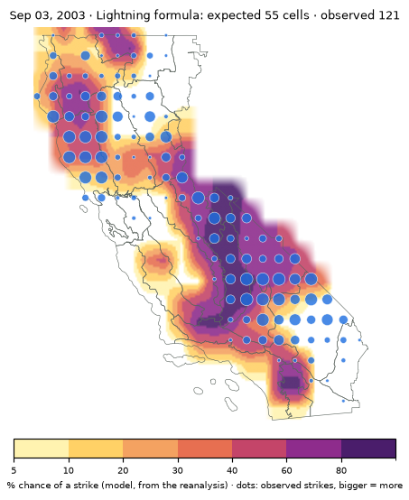
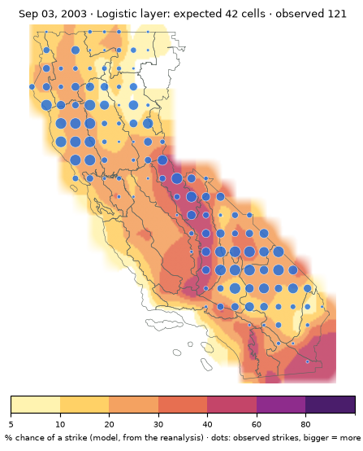
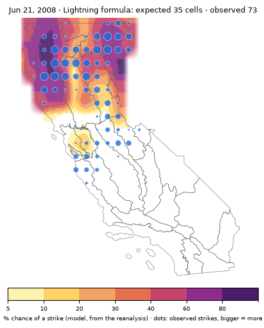
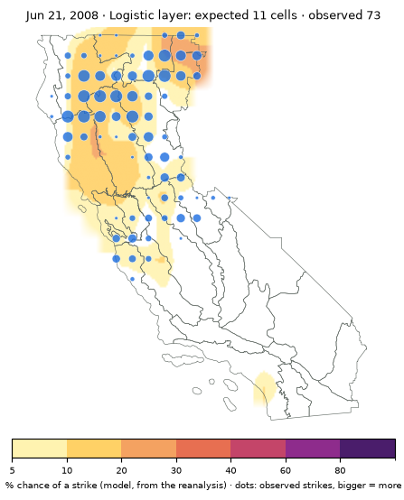
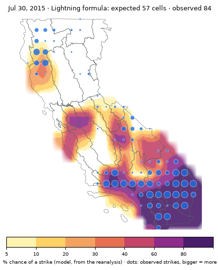
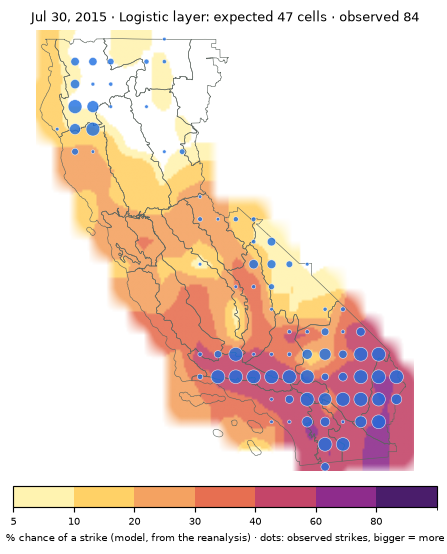
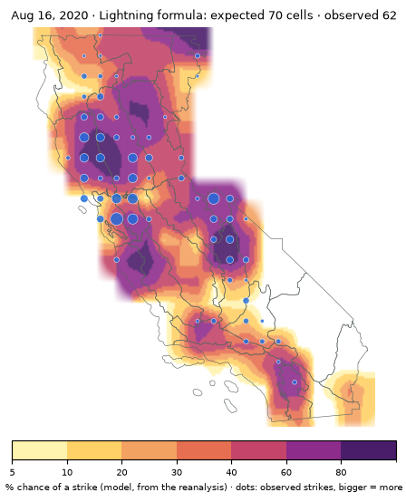
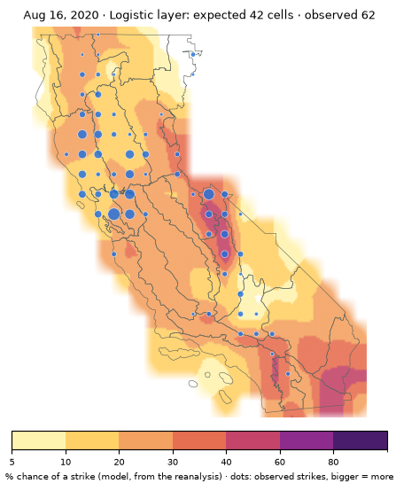
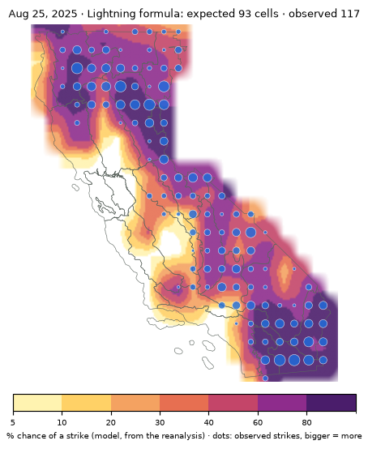
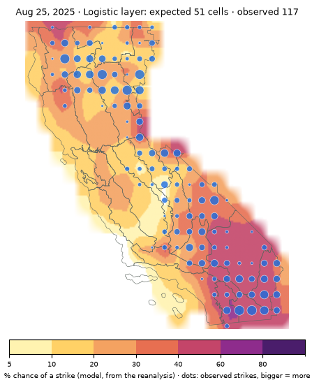